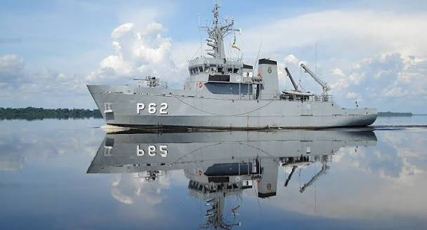

NPa BOCAINAP-62
TEN THIAGO SANTOS

MARINHADO BRASIL
INVENTÁRIO DO ARMÁRIO RP
Todos os materiais do armário do RP — P-62 NPa Bocaina
| ID | Localização | Material | Quantidade | Tipo | Observações |
|---|
ANIVERSARIANTES
Militares/ Organizações Militares
MUNICIAMENTO
Controle de gêneros alimentícios e registros administrativos.
RESUMO RP
Visão rápida da distribuição do armário.
Localizações
Selecione um compartimento ou gaveta para consultar seus materiais.